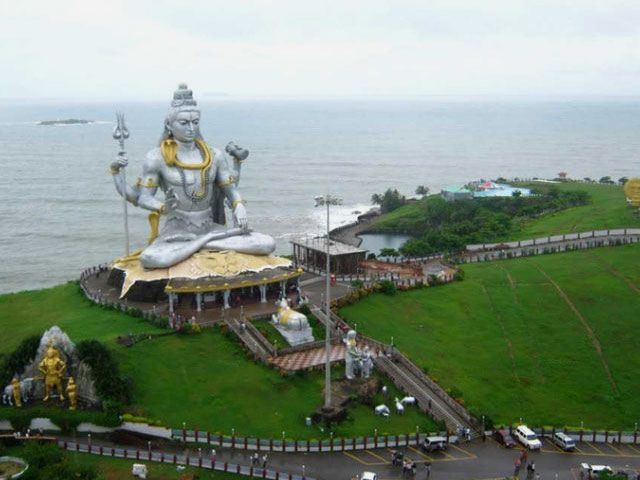
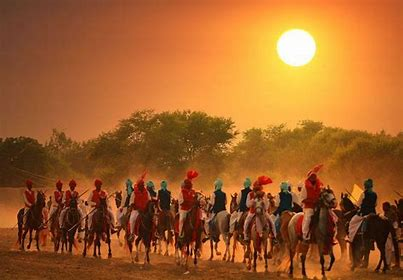
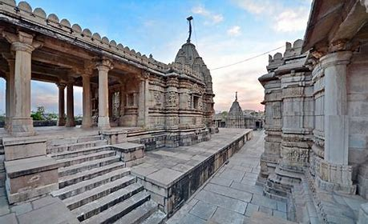
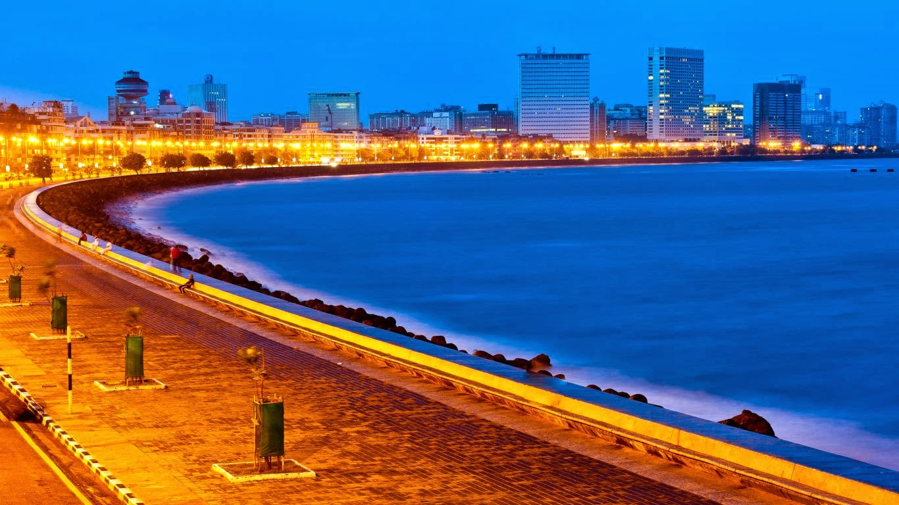
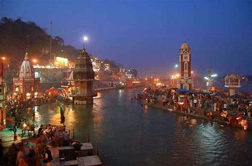
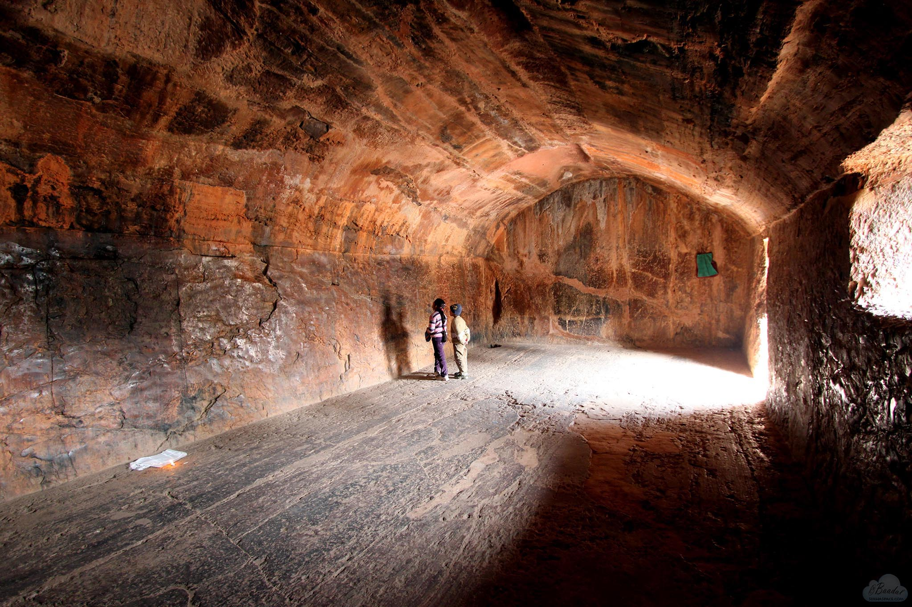
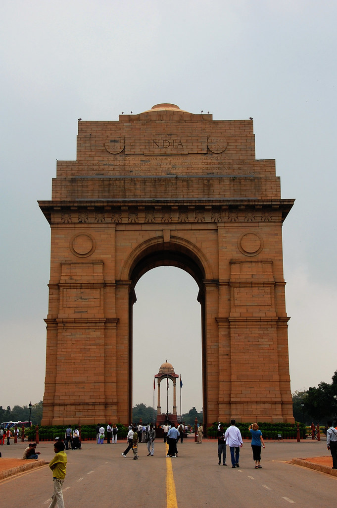

India, officially the Republic of India (Hindi: Bhārat Gaṇarājya),[26] is a country in South Asia. It is the seventh-largest country by area, the second-most populous country, and the most populous democracy in the world. Bounded by the Indian Ocean on the south, the Arabian Sea on the southwest, and the Bay of Bengal on the southeast, it shares land borders with Pakistan to the west;[f] China, Nepal, and Bhutan to the north; and Bangladesh and Myanmar to the east. In the Indian Ocean, India is in the vicinity of Sri Lanka and the Maldives; its Andaman and Nicobar Islands share a maritime border with Thailand, Myanmar and Indonesia.

Shiva Temple - Murdeshwar Murdeshwar is a town in Bhatkal Taluk of Uttara Kannada district in the state of Karnataka, India. The town is located 13 km from the taluk headquarters of Bhatkal. It is famous for the world's second tallest Shiva statue, the town lies on the coast of the Arabian Sea and is also famous for the Murudeshwara Temple.[1] The town has a railway station on the Mangalore–Mumbai Konkan railway route.

Ancient Villagers The Ancient Village is a village in Ta Lo. Once, a long time ago, the people of Ta Lo were at war with the Soul Eaters and their leader, the Dweller-in-Darkness. The war lasted until every village in Ta Lo was destroyed with the exception of one. The villagers fought valiantly, and with the help of the Great Protector, managed to lock the Dweller-in-Darkness behind the Dark Gate.

Ancient Temple Bull Temple, Basavanagudi. A temple built in the Dravidian style by Kempe Gowda, founder of Bangalore, it has a...
Banashankari Temple, Kanakapura Road. The uniqueness of Sri Banashankari Amma Temple is that the deity, Banashankari...
Kadu Mallikarjunaswamy Temple, Malleshwaram. Built in one of the oldest areas in Bangalore - Malleswaram, the temple is...
Dodda Ganesha Temple, Basavanagudi. The monolithic Ganesha is about 18 ft in height and 16 ft in width. The God is also...

Mumbai Mumbai is the capital city of the Indian state of Maharashtra and the de facto financial centre of India. According to the United Nations, as of 2018, Mumbai is the second-most populous city in India after Delhi and the eighth-most populous city in the world with a population of roughly 2 crore. As per the Indian government population census of 2011, Mumbai was the most populous city in India with an estimated city proper population of 1.25 crore living under the Municipal Corporation of Greater Mumbai.

Haridwar Haridwar (/hʌrɪˈdwɑːr/; local pronunciation (help·info)) is a city and municipal corporation in the Haridwar district of Uttarakhand, India. With a population of 228,832 in 2011, it is the second-largest city in the state and the largest in the district.[3]
The city is situated on the right bank of the Ganges river, at the foothills of the Shivalik ranges.[4] Haridwar is regarded as a holy place for Hindus, hosting important religious events and serving as a gateway to several prominent places of worship. Most significant of the events is the Kumbha Mela, which is celebrated every 12 years in Haridwar. During the Haridwar Kumbh Mela, millions of pilgrims, devotees, and tourists congregate in Haridwar to perform ritualistic bathing on the banks of the Ganges to wash away their sins to attain moksha.

Rajgir Vishwa Shanti Stupa (English: World Peace Stupa) is a large white Peace Pagoda in Rajgir, Nalanda District, Bihar, near Gitai Mandir. Statues of the Buddha are mounted on the stupa in four directions. It also has a small Japanese Buddhist temple with a large park. There is a temple near the stupa where prayers are conducted for universal peace. The initial pagoda was completed in 1969. New initiatives in 1993[1] resulted in the present form. It is one of around 80 Peace Pagodas which have been built around the world by the neo-Buddhist organisation Nipponzan Myohoji.[

INDIA Gate The India Gate (formerly known as the All India War Memorial) is a war memorial located astride the Rajpath, on the eastern edge of the "ceremonial axis" of New Delhi, formerly called Kingsway. It stands as a memorial to 84,000 soldiers of the British Indian Army who died in between 1914 and 1921 in the First World War, in France, Flanders, Mesopotamia, Persia, East Africa, Gallipoli and elsewhere in the Near and the Far East, and the Third Anglo-Afghan War.